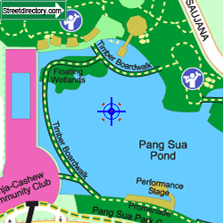
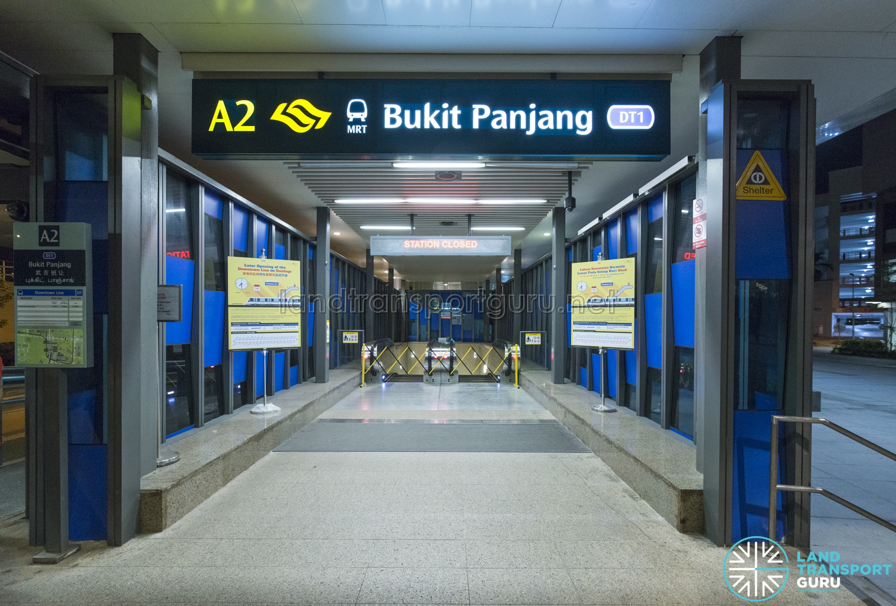
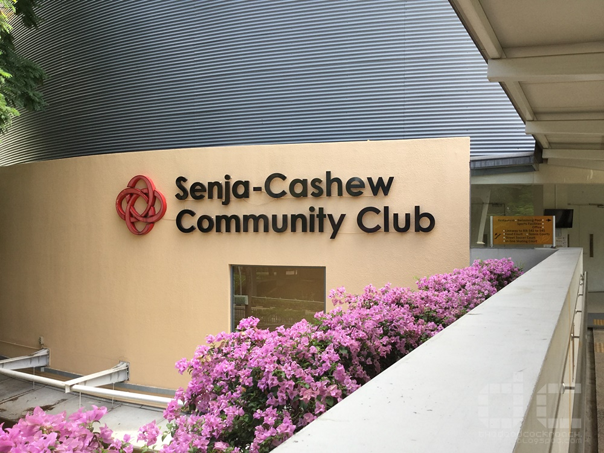
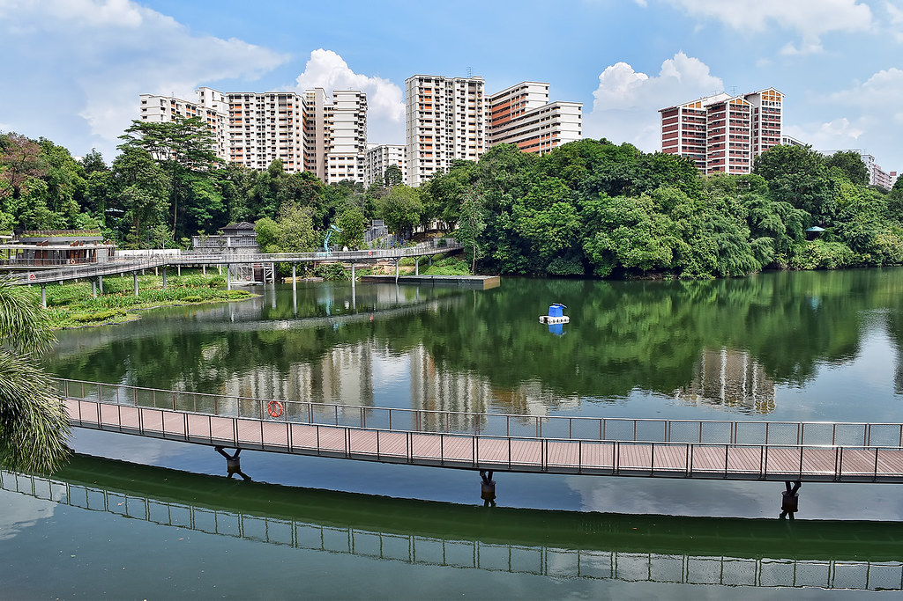
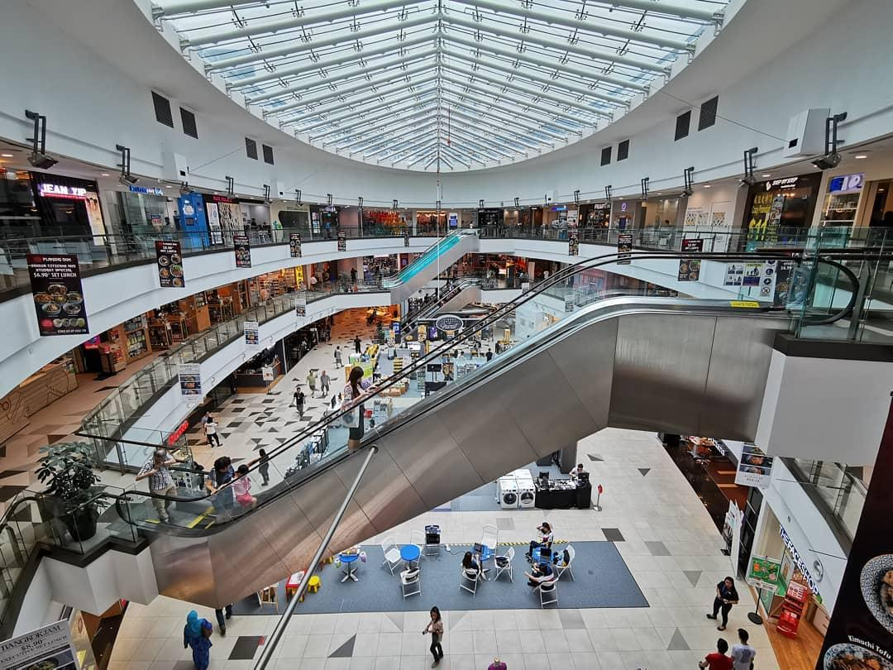
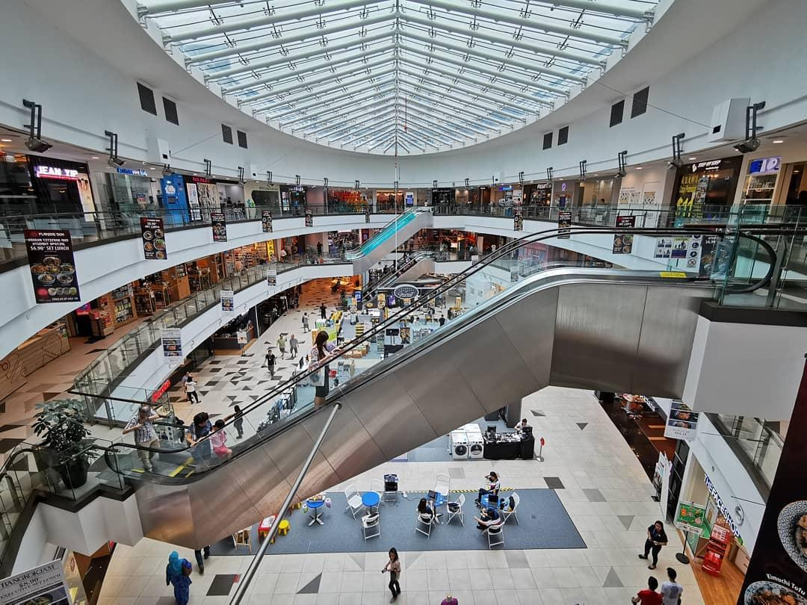

Enjoy the scenery in Pang Sua Pond
With 5 mins away from Bukit Panjang MRT, it is easily accessible for all
 Opened in 25 March 2017, the Pang Sua Pond is a 480-metre long boardwalk that connects the surrounding blocks of flats and Senja-Cashew Community Centre.
 One can engage in so many activities here! Conveniently located near Senja-Cashew CC and Bukit Panjang Plaza, this place provides convenience for all!
 
